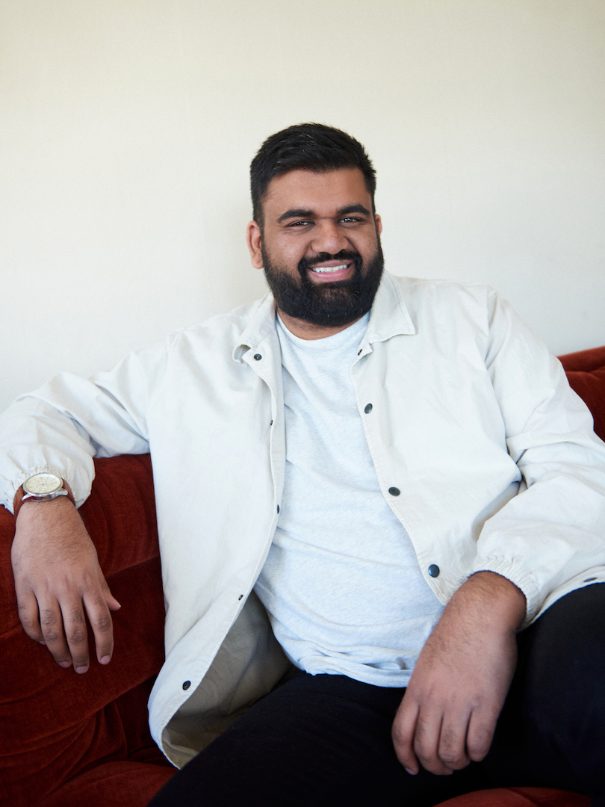

About Me
I am Rohit Kumar Singla, a Vanier Scholar and an MD/PhD candidate at the University of British Columbia (UBC). Entering my seventh and final year, I have defended my PhD in AI-enhanced diagnostics in kidney ultrasound under the expert guidance of Prof. Robert Rohling and Dr. Chris Nguan.
My Work
- Bloom Burton & Co.: Contract Scientific Consultant since April 2024.
- Amplitude Ventures: Contract Consultant since November 2023, after completing the Pre-Amp Fellowship in 2022 .
- Ultrasound Technology Consulting: Working with an undisclosed company to advance ultrasound technology applications.
My research has led to contributions in ultrasound, artificial intelligence, augmented reality, and medical education. Some notable publications include:
- "Intra‐operative ultrasound‐based augmented reality guidance for laparoscopic surgery" (Healthcare technology letters, Oct 2017) - Introduced an AR system to improve surgical accuracy and safety.
- "Insights from teaching artificial intelligence to medical students in Canada" (Communications medicine, June 2022) - Explores AI education for medical students to enhance clinical decision-making.
- "Speckle and shadows: ultrasound-specific physics-based data augmentation for kidney segmentation" (International Conference on Medical Imaging with Deep Learning, Dec 2022) - Describes advanced data augmentation techniques to improve ultrasound image analysis.
Areas of Expertise
- Ultrasound Imaging
- Machine Learning
- Augmented Reality
- Medical Devices
- Strategic Planning
- Data Analytics
- Due Diligence and Investments
- Medical Education
Outreach and Advocacy
I am dedicated to enhancing diversity and inclusion within STEM, actively participating in university committees and symposiums focused on equity. As a fervent advocate for organ donation, I am a registered organ donor and encourage others to join this cause.
Connect With Me
I am passionate about using technology to improve healthcare outcomes and am always eager to engage in new collaborations, share knowledge, or (on select occasion) provide mentorship. Please reach out via email at ro[at]rsingla[dot]com to discuss how we can work together to innovate and improve the healthcare landscape.